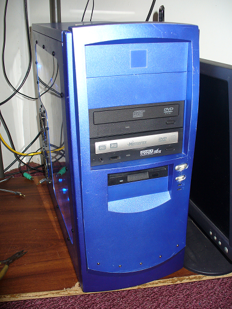

Welcome to dookie-man's xp tools! here you'll find plenty of software that has been tested with my windows xp machine (more about my machine below). retro web design!! ☻

This is The Blue PC(such a creative name right?) I use this for playing games of the era.
Specs
| Software | Description/Notes | Download |
| Firefox 45 | I linked the 45.0.1esr version because it does not require SSE2 support. | Download |
| VLC 2.0.5 | cone icon video player that will outlive you :) | Download | 7-zip | best archive tool in existense. DON'T LIE ITS TRUE! | Download |
| Winamp 5.094 | I love winamp and you should too. Also here's a cool website to get skins. https://skins.webamp.org/ | Download |
| Name | Description/Notes | Link |
| Skipster1337's Website | Better website with more resources and some other stuff. | skipster1337.github.io |
| InternetRadio | Its radio on the world wide web! | https://www.internet-radio.com/ |
| Watching Grass Grow | watch grass grow | https://www.watching-grass-grow.com/ |
| The old net | internet tool for old computers | http://theoldnet.com/ |
Contact me at thebluepc@hotmail.com